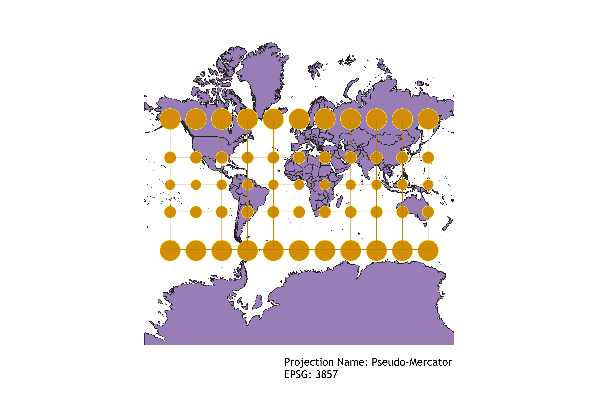
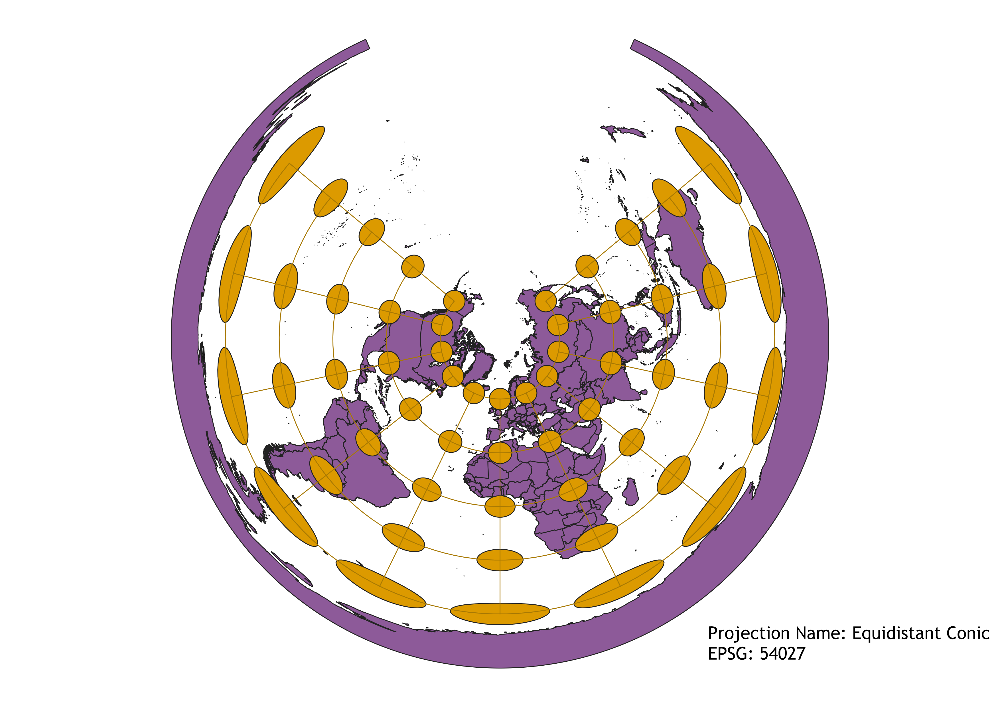

Stacey's GEOG 370 HW 3 Maps
Describe in your own words how you displayed the map in different projections using QGIS
I used the same project for most of the maps, downloading the world map shapefile from the "naturalearth" folder as a vector layer, using the indicatrix mapper plugin to produce the graticules, then changing the ESRI number as needed. I exported each projection as a png in the project layout before I moved on to the next one.
WGS84 Projection
Size, shape, and position of most countries are relatively well-represented on a rectangular plane, but distortion increases the closer a location is to the poles. Google Maps represents the world map using a similar Mercator type projection.

Aitoff Projection
Places projection on a rounded plane, mimicking an actual globe. Distortion of shape and size is present across more points compared to a Mercator projection, but locations near the poles are far less distorted.

Now, you should add the following projections on your own:
EPSG: 3857, 53018, 54034, 54027, 102016, and two additional projections that you choose.
Pseudo-Mercator Projection
Similar to WGS84, another Mercator type projection. Size, shape, and relative position of countries are generally well-represented except near the poles, which are disproportionately enlarged. Distortion of shape is minimal compared to the WGS84 and Aitoff projections.

Winkel I Projection
Places projection on a cylindrical plane, resulting in distortion of most points on the map. Distortion is most pronounced at the longitudes furthest from the prime meridian and at the poles.

Cylindrical Equal Area Projection
Places projection on a rectangular plane while preserving area, thus avoiding issues such as the Mercator type's Africa-sized Greenland. Shape and relative position of locations are increasingly distorted with proximity to the poles.

Equidistant Conic Projection
Represents the world as a cone with significant distortion of shapes as distance from the standard parallels increases. Most accurate at the pole representing the "tip" of the cone, though a section of the world is left blank due to the conical shape.

North Pole Azimuthal Equidistant Projection
Projects the world onto a circle using the North Pole as a reference point. Locations closest to the North Pole retain proper shape, size, and relative position while locations further away become increasingly distorted.
Craster Parabolic Projection
Based on a cylindrical projection that preserves area. Longitudes increasingly bulge outwards with distance from the prime meridian while latitudes converge to singular points as they near the poles. This in combination produces a shape similar to a spinning top.
Eckert I Projection
Based on a cylindrical projection, but with sharp angles rather than rounded ones that results in a shape similar to a tent. The ArcGIS website actually describes this projection as basically being a novelty map that is notable more for its shape than any accuracy or utility. All locations on the map are distorted to some extent, with points near the equator experiencing more distortion of shape and points near the poles experiencing more distortion of size.
Data used for this project
Download Natural Earth 1:10m Cultural Vector